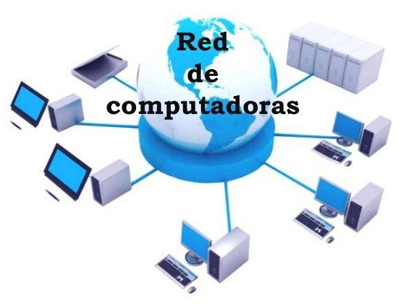

Objetivo general

Brindar información a comunidades o personas interesadas en documentarse en todo lo
relacionado con Administración de Redes como beneficios, creación, seguridad, entre otros.


Brindar información a comunidades o personas interesadas en documentarse en todo lo
relacionado con Administración de Redes como beneficios, creación, seguridad, entre otros.
Conocer las bondades que ofrece la implementación y administración de redes.
Conocer los diferentes tipos de redes que existen y en qué momento implementarlas
Identificar riesgos o amenazas a la que está expuesta una red.